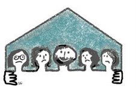

پذيرش > كوچه به كوچه > پسرم می تو نه دو تا زن بگیره / بهناز شکاریار


 پسرم می تو نه دو تا زن بگیره / بهناز شکاریار پسرم می تو نه دو تا زن بگیره / بهناز شکاریار
27 دی 1386 - - نسخه قابل چاپ
سعی می کرد از چشم من پنهان بماند و نگاهش را ازمن می دزدید. چقدر پیر شده بود درحالی که فقط یک سال از من بزرگ تر است. گاه وبیگاه نگاهش به دوردستها می رفت. مدت مدیدی به یک نقطه خیره می ماند گویا فراموش می کرد در جمع فامیل نشسته است. سعی می کرد با کسی هم صحبت نشود. من هم مزاحمش نشدم. مادر شوهرش که از اقوام نزدیک من هست کنارم نشست وخوش وبشی کرد. از حال عروسش پرسیدم چهره اش را درهم کشید و گفت : "بیخودی زور می زنه. پسرمن زن دومش را طلاق نمی ده اون هم تازه به خاطر این زن زشت."
یاد روزهایی افتادم که پسرش 19 ساله بود و خانه شان را پر از آشوب کرده بود که باید با دختر دائی شانزده ساله اش ازدواج كند. روز عروسیشان را به خاطر دارم. هنوز هم یک چنین عروس زیبایی ندیده ام .
به مادر شوهرش اعتراض کردم و گفتم: " پسرت باعث شده. او با آزار هایش این زن را پیر کرده. کجا رفت آن خنده ها و شوخی ها. می بینید چقدر گوشه گیر شده؟؟"
مادرشوهر با دلخوری گفت : "چه کار کنیم مردها همه شون همین طورند حالا این دلیل نشد که بشینه و زانوی غم به بغل بگیره. اگر حاضر می شد با هوویش زندگی کنه هزینه زندگیشون کمتر می شد و فشار کمتری هم به پسرم می اومد."
کم کم داشتم عصبانی می شدم. با ناراحتی گفتم: "خاطرم هست گاهی همسر شما به شوخی می گفت می خوام برات هوو بیارم تا در کار خونه کمکت کنه!! خوب یادمه که شما سرخ می شدی و می گفتی تو رو خدا از این حرف ها نزن قلبم درد می گیره. حالا چی شده که یک چنین توقع بزرگی از عروست داری که با هوویش یک جا زندگی کند؟؟"
گفت: "خب. وضع مالی ما خوب نبود ولی پسرم می تونه دوتا زن بگیره !"
دیگر به این گفت و گوی آزار دهنده ادامه ندادم و از او جدا شدم.
سرگرم مهمانی شده بودم که دیدم کسی مرا در آغوش کشید وبوسید. مادر آن زن بود . هرچند سال ها بود که فامیل شده بودیم ولی هیچ گاه اورا آنقدر صمیمی ندیده بودم.
ازمن حلالیت می طلبید.علتش را پرسیدم او گفت: "زمانی که تو داشتی طلاق می گرفتی من خیلی پشت سرت حرف زدم و فکر می کردم تقصیر توست و تو می بایست بیشتر سازگاری نشان می دادی. من فکر می کردم اگر زنی سازگار و قانع باشد شوهرش برایش جان می دهد چی بگم؟ آخه شوهرهای ما این طوری بودند ولی حالا دخترم را ببین. جلوی چشمم داره آب می شه. انگار نه انگار که آمده میهمانی. هرکس ببیندش فکر می کنه یا مریضه یا عزاداره. سال های سال بچه ام نخورد و نپوشید و نگشت تا وضع مالیشون خوب بشه. حالا هم که وضعشون خوبه چیزی نصیب اون نشده. "
مادر که اشک همه صورتش را پوشانده بود روی صندلی کنارم نشست و ادامه داد: "تو رو خدا تو بگو مگه دختر من چه ایرادی داشت. کلی خواستگار داشت ولی اونقدر آمدند و رفتند تا مارا راضی کردند. پدرش که از غصه ی بخت بد دخترم سکته کرد و مرد و راحت شد ولی من چه کار می تونم بکنم. هرچه می گم طلاقت را بگیر اینکاررا نمی کنه چون شوهرش گفته بچه هارو بهت نمی دم. تازه طلاق بگیره چکار کنه .40 سال بیشتر نداره ولی به نظر 50 ساله میاد. چون زود شوهر کرد دیپلم نداره که بره سر کار. می ترسم بلایی سرخودش بیاره. انگیزه زندگی رو از دست داده اگر غذا درست می کنه و یا جارویی به خونه می زنه فقط به خاطر بچه هاست . اون ها هم دارند مثل مادرشون میشن. وقتی که پا می ذارم توی خونه شون دلم می گیره. دیگه صدای بازی بچه ها رو نمی شنوم. این مرد جواب خدارو چی می خواد بده ؟"
درپایان مهمانی توی راه پله با او رو به رو شدم اصلا به روی خودش نیاورد من هم همین طور. از بچه ها پرسیدم و او توضیح داد پهلوی پدرشان هستند و در حالي كه مرتب سرخ و سفيد مي شد، طوری شرح می داد انگار تمام حرفهای دیگران دروغ است. چشمهای گودرفته اش را بر من دوخته بود؛ چشم ها انگار التماس می کردند که حرفهایش را باور کنم...
ارسال به
بالاترین
،
توییتر
،
فریندفید
،
فیسبوک
در همين بخش :
 روايت بيست و پنجمين شهريور / نرگس طیبات روايت بيست و پنجمين شهريور / نرگس طیبات
وقتی آتش خاموش شود/فرشته نوبخت
آن گاه که زن شدم / ویژه نامه 8 مارس 1391
چیزی زیر پوست این شهر می جوشد / دلارام علی
گرسنگی / وبلاگ سیب و سرگشتگی
ديگر بخش ها :
طرح یک میلیون امضا
|
مقالات
|
سایت نوشته ها
|
اخبار
|
گزارش كمپين
|
گفت و گو
|
علیه سکوت
|
كوچه به كوچه
|
نامه های شما
|
گزارش ویژه
|
گفتگو با اعضا
|
ویژه سالگرد کمپین
|
تصویر برابری
|
دل آرام علی
|
تریبون
|
مقالات
|
تاریخ شفاهی
|
خارج از چارچوب
|
کتابخانه
|
درباره کمپین
|
کمپین در شهرها
|
کمپین در بند
|
صدای تغییر
|
ویژه 22 خرداد
|
لایحه حمایت از خانواده
|
گالری
|
عشا مومنی
|
امیر یعقوبعلی
|
خدیجه مقدم
|
راحله عسگری زاده و نسیم خسروی
|
پروین اردلان،جلوه جواهری، مریم حسین خواه، ناهید کشاورز
|
زینب پیغمبرزاده
|
سعیده امین، سارا ایمانیان، محبوبه حسین زاده، ناهید کشاورز و همایون نامی
|
احترام شادفر
|
نسیم سرابندی زاده،فاطمه دهدشتی
|
وبلاگ مهمان
|
پرونده خرم آباد
|
دستگیری ها
|
مریم مالک
|
پرستو اللهیاری
|
مهرنوش اعتمادی
|
سمیه رشیدی
|
Other Languages
|
همراهان
|
«فراخوان کمپین ده روز با بهاره هدایت»
| English
|